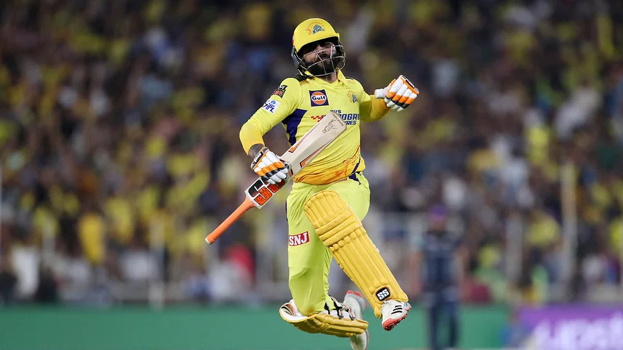

শেষ বলে বাউন্ডারি মেরে জয় উদ্যাপন জাদেজার ছবি: টুইটার
আইপিএল ফাইনাল তাহলে কয়দিন ধরে হলো? আহমেদাবাদের নরেন্দ্র মোদী স্টেডিয়ামে
ফাইনাল দেখতে দেখতে এই প্রশ্নটা মাথায় উদয় হতে পারে। ফাইনাল হওয়ার কথা ছিল কাল। রোদের বৃষ্টির কারণে সেটি আজ রিজার্ভ ডে-তে নিয়ে আসা হয়। গুজরাট টাইটানস টস হেরে আগে ব্যাট করে ৪ উইকেটে ২১৪ রান তোলার পর তাড়া করতে নেমেছিল চেন্নাই সুপার কিংস।